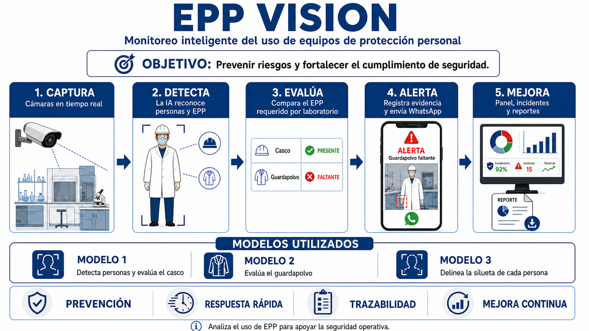
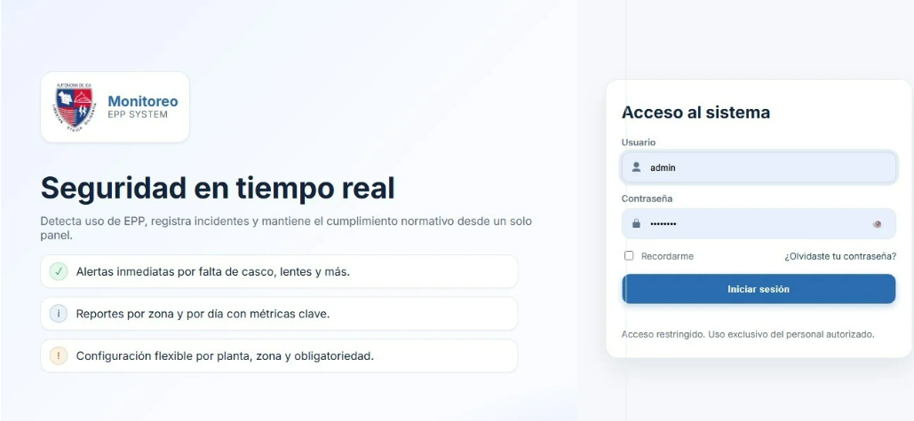
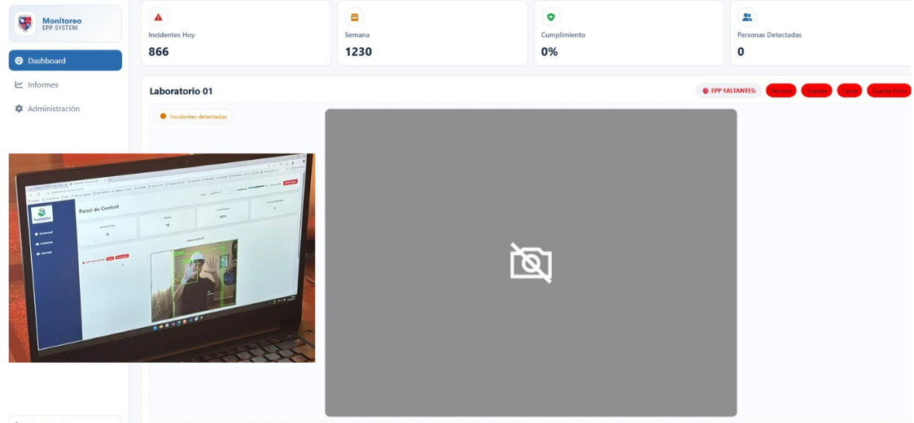
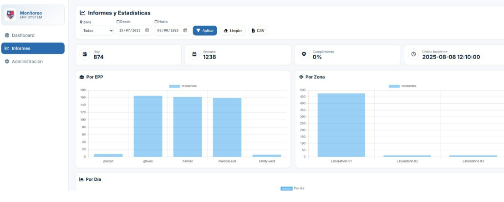
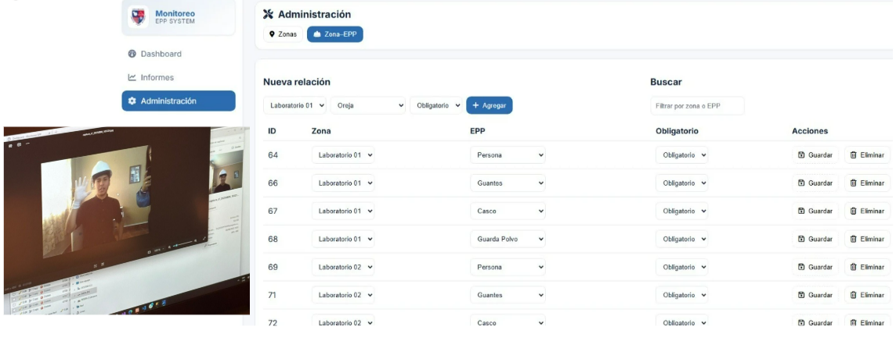
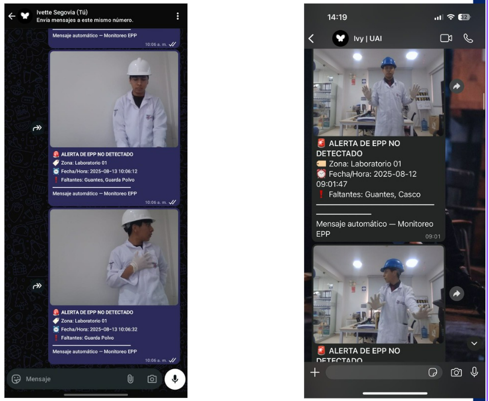
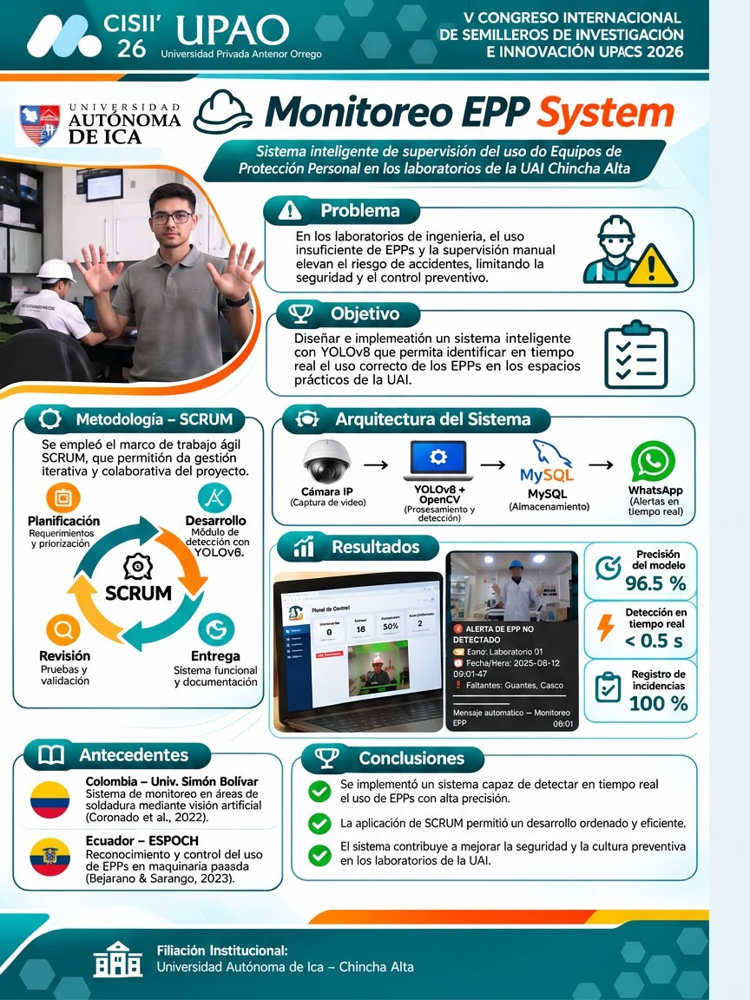

01
Problema
La revisión manual puede retrasar la identificación de personas sin el equipo de protección requerido.
Monitoreo inteligente del uso de equipos de protección personal en laboratorios mediante inteligencia artificial.
Explora la demostración grabada del proyecto y su plataforma de monitoreo.
Demostración del proyecto · 6 min 51 s.
En los laboratorios de ingeniería, el uso inadecuado de los equipos de protección personal y la supervisión manual dificultan identificar incumplimientos a tiempo. EPP VISION propone automatizar la detección visual para apoyar la prevención de riesgos y el cumplimiento de las normas de seguridad.
La revisión manual puede retrasar la identificación de personas sin el equipo de protección requerido.
Detectar en tiempo real el uso correcto de EPP mediante visión artificial basada en YOLOv8.
Registrar incidencias, facilitar la evaluación y enviar alertas para una respuesta más oportuna.
Desde la captura de video hasta el registro de incidencias, el sistema sigue cinco etapas conectadas.
Las cámaras obtienen imágenes del laboratorio.
La IA identifica personas y elementos de protección.
Compara lo detectado con el EPP requerido.
Registra evidencia y genera notificaciones.
El panel permite revisar incidentes y reportes.

La solución organiza la detección en tres funciones complementarias. El informe describe la recolección y el etiquetado de imágenes reales del entorno universitario, el entrenamiento y las pruebas de detección.
Detecta la presencia de personas y evalúa visualmente el uso del casco.
Identifica si la persona lleva el guardapolvo requerido para el laboratorio.
Delimita la silueta de cada persona para apoyar el análisis visual.
Se recopilan y etiquetan imágenes reales de estudiantes y docentes, considerando variaciones de iluminación.
Los modelos aprenden a reconocer patrones y se evalúan con imágenes de prueba.
Se integran las detecciones al sistema y se revisan resultados para realizar mejoras.
El alcance documentado contempla casco, guardapolvo, guantes y mascarilla; la infografía describe tres modelos. No se dispone de cantidades de imágenes, épocas ni métricas desglosadas por modelo.
Las cámaras proporcionan imágenes; YOLOv8 y OpenCV apoyan el procesamiento y la detección; MySQL permite almacenar incidencias; la interfaz web facilita su consulta y WhatsApp se utiliza como canal de alertas.
Capturas del informe técnico. Toca una imagen para ampliarla.





El material de presentación reporta indicadores de desempeño y muestra ejemplos del panel y las alertas. Estas cifras corresponden a los resultados comunicados por el proyecto.

Las cifras deben contrastarse con el protocolo de pruebas antes de presentarse como métricas independientes verificadas.
Definición del alcance, requerimientos y tecnologías.
Implementación de visión artificial, backend y alertas.
Evaluación en laboratorio, ajustes e integración de la interfaz.
Prevención de riesgos, respuesta oportuna, trazabilidad de incidentes y apoyo a la mejora continua de la seguridad operativa.
Comparación de detecciones con observación física, revisión de alertas y estabilidad del sistema.
La iluminación, calidad de cámara, hardware y conexión de red afectan el rendimiento y la entrega de alertas.
Capacitación, revisiones periódicas y ampliación gradual desde un laboratorio piloto.
El proyecto recoge experiencias de visión artificial en seguridad de Colombia y Ecuador, así como estudios de gestión de EPP en Perú.
Ji et al. (2023). Detección de equipos de protección personal.
EPP VISION apoya la supervisión humana; no sustituye los protocolos de seguridad.